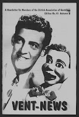

We have our winners!
1/12/2010
{kind=link}

Following the death of Paul Winchell in 2005, the British Association of Ventriloquists (no longer functioning) published an issue of Vent-News which included a nice tribute article to Winchell. It begins by telling how Winchell was a fan of Edgar Bergen, how he purchased a booklet written by Bergen and actually made his first figure at the age of 14. Winchell performed impressions of Bergen and Charlie McCarthy at a school function and was later invited to enter the Major Bowes Amateur Hour, a popular radio program at the time. The young vent broke the record for audience votes. Just two weeks after he won, Winchell went on tour with a travelling unit of the amateur hour. (Sounds a lot like TV's American Idol of today, doesn't it?).
The above biographical information is from the opening paragraph of the 3 page Winchell tribute article written by Paul Story. In this same issue there are also feature articles on other vent subjects written by Story, Trevor Burch and Len Belmont.
The 7 persons who won a free copy of this newsletter were (in order): Joshua Minetree, Larry Colombo, Bob Abdou, Dr. Dan Bartlett, Mike Palma, Geoffrey Moran, & Donald Woodford.